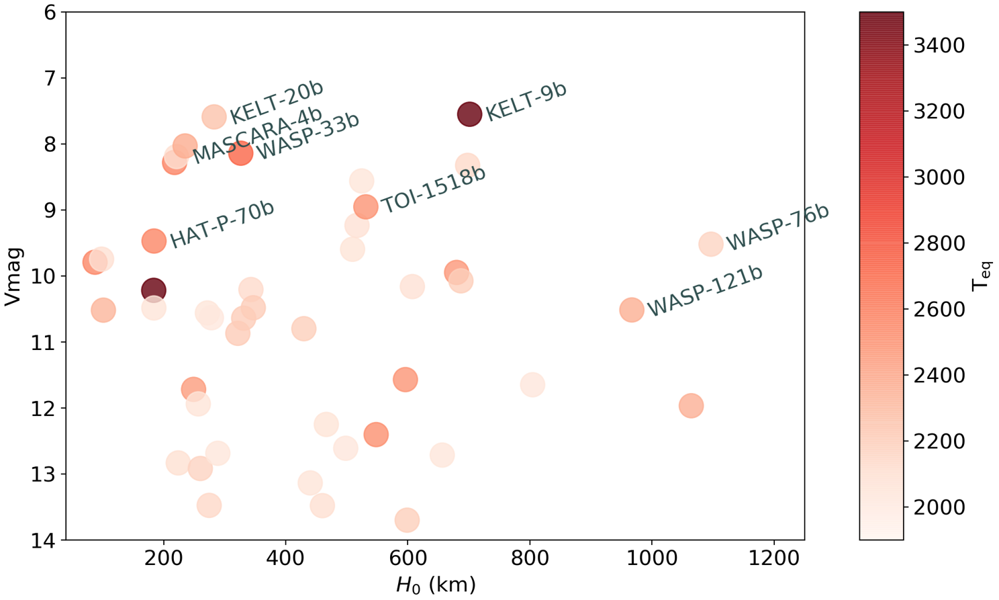
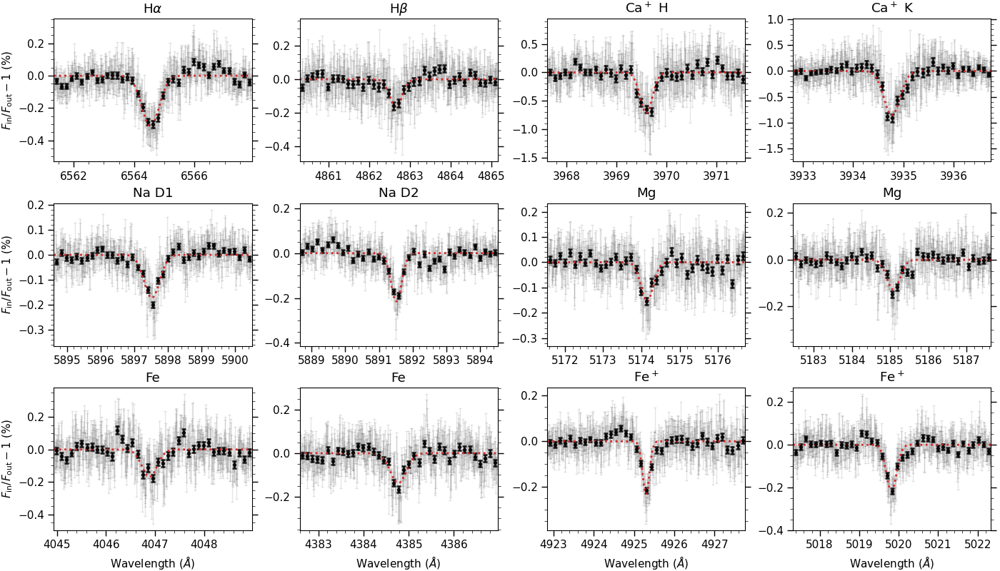
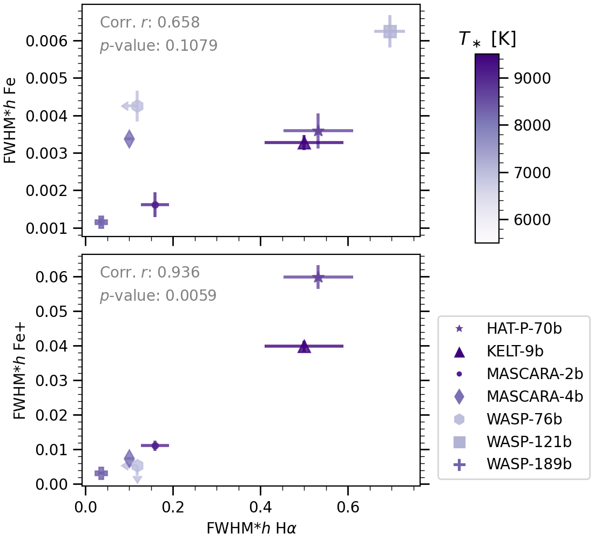

Ultra hot Jupiter (UHJ) is an extreme class of exoplanets which gets really close to its host star, typically within 0.05 au, and with an eqlibrium temperature higher than 2000K. Becasue of the extreme conditions, they are excellent laboratories for the atmospheric characterization. At such high temperature, many species are mainly in the atomic form, such as atomic H, Na, Fe, and inoic Fe+. High temperature contrast is typically found between the day and night side of these planets, which can lead to day-to-night-side winds and chemical asymmetry. Furthermore, the atmopsheric escape is an important topic in the context of UHJs, because hot early-type host stars are dumping high energy into the close-in planet upper atmosphere (also called exopshere). This could increase the temperature there, and allow for significant hydrodynamic escape. Studying the mass loss is important in understanding the evolution of these highly-iradiated exoplanets. So far there are a few tens of UHJs discovered, and about a handful of them have been studied in detail with high resolution spectroscopy (see Figure 1).

High-resolution transmission spectroscopy of ultra-hot Jupiters #
In order to characterize the atmospheres, we utilise high-resolution transmission spectroscopy. During transit the starlight filters through the planetary atmosphere, resulting in excess absorption because of the opacities in the planetary atmosphere. We compare high-resolution spectra of the system both during and out-of transit in order to tease out the planetary signatures (see Figure 2).
![Illustration of high-resolution transmission spectroscopy. The planet is moving towards us (blue-shifted) at the beginning of the transit, and then moving away (red-shifted) after the mid-transit. In the bottom panel, the y-axis is the orbital phase or time; each row is one transmission spectrum at a certain time (i.e. division between in-transit and out-of-transit spectra). The dark shadow represents the trace of the planetary absoprtion signal shifting in radial velocity due to the orbital motion of the planet. Co-adding this 2D time series in the planet’s rest frame leads to the final 1D transmission spectrum like shown in <em>Figure</em> 3.](Transmission.gif)

Disentangling the hydrostatic and exospheric regimes of ultra-hot Jupiters #
As the detection of atoms with high-resolution transmission spectroscopy accumulates quickly, a small sample of ultra-hot Jupiters starts to build up, providing us with the opportunity to study potential trends of atomic signatures in the UHJ population. Among various species, H, Na, Mg, Ca+, Fe, and Fe+ have been commonly detected in a handful of UHJs as shown in Figure 4. We plot the measured absorption amplitude against the expected values from the hydrostatic point of view. Neutral metal species including Na, Mg, and Fe generally show linear correlations, meaning that they agree with the hydrostatic regime. Hydrogen and ionized Fe do not follow the linear hydrostatic trends, indicating that they probe the exopsheric regime, where the thermal chemical equilibrium, local thermodynamic equilibrium, and hydrostatic assumptions no longer apply.
![Correlation of observed line strengths (h) of different species with expected transmission strengths of absorbers extending one atmospheric scale height for different UHJs. The color saturation of data points represents the temperature of the host star. The Pearson correlation coeffcients r and the p-values for testing non-correlation are calculated for each species. For metals such as Mg and Fe, r close to 1 and p-value close to 0 indicate strong linear correlation of absorption amplitudes with scale heights. The linear fit to the data points is delineated with dotted gray lines, the slope of which represents the number of scale heights that a certain species probes.](UHJ_scaleheight.png)
We further highlight the exospheric origin of Hα and Fe+ in Figure 5. The absorption strength of Fe+ shows a positive relation with Hα, which is a strong evidence that both species trace the exospheres. In that case, the absorption levels are determined by the hydrodynamic outflow as induced by the high energy stellar radiation. Therefore, these lines are useful tracers for the atmospheric escape and mass loss of UHJs.
